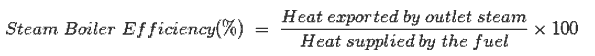
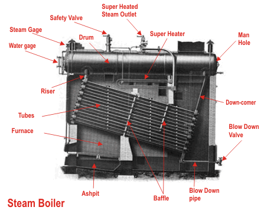

Working Principle of Boiler
Steam Boiler Efficiency
Types of Boiler
Fire Tube Boiler
Types of Fire Tube Boiler
Advantages of Fire Tube Boiler
Disadvantages of Fire Tube Boiler
Water Tube Boiler
Types of Water Tube Boiler
Advantages of Water Tube Boiler
Disadvantages of Water Tube Boiler
Boiler or more specifically steam boiler is an essential part of thermal power plant.
Definition of Boiler
Steam boiler or simply a boiler is basically a closed vessel into which water is heated until the water is converted into steam at required pressure. This is most basic definition of boiler.
Working Principle of Boiler
The basic working principle of boiler is very very simple and easy to understand. The boiler is essentially a closed vessel inside which water is stored. Fuel (generally coal) is bunt in a furnace and hot gasses are produced. These hot gasses come in contact with water vessel where the heat of these hot gases transfer to the water and consequently steam is produced in the boiler. Then this steam is piped to the turbine of thermal power plant. There are many different types of boiler utilized for different purposes like running a production unit, sanitizing some area, sterilizing equipment, to warm up the surroundings etc.
Steam Boiler Efficiency
The percentage of total heat exported by outlet steam in the total heat supplied by the fuel(coal) is called steam boiler efficiency.

It includes with thermal efficiency, combustion efficiency & fuel to steam efficiency. Steam boiler efficiency depends upon the size of boiler used. A typical efficiency of steam boiler is 80% to 88%. Actually there are some losses occur like incomplete combustion, radiating loss occurs from steam boiler surrounding wall, defective combustion gas etc. Hence, efficiency of steam boiler gives this result.
Types of Boiler
There are mainly two types of boiler – water tube boiler and fire tube boiler.
In fire tube boiler, there are numbers of tubes through which hot gases are passed and water surrounds these tubes.
Water tube boiler is reverse of the fire tube boiler. In water tube boiler the water is heated inside tubes and hot gasses surround these tubes.
These are the main two types of boiler but each of the types can be sub divided into many which we will discuss later.
Fire Tube Boiler
As it indicated from the name, the fire tube boiler consists of numbers of tubes through which hot gasses are passed. These hot gas tubes are immersed into water, in a closed vessel. Actually in fire tube boiler one closed vessel or shell contains water, through which hot tubes are passed. These fire tubes or hot gas tubes heated up the water and convert the water into steam and the steam remains in same vessel. As the water and steam both are in same vessel a fire tube boiler cannot produce steam at very high pressure. Generally it can produce maximum 17.5 kg/cm2 and with a capacity of 9 Metric Ton of steam per hour.
Types of Fire Tube Boiler
There are different types of fire tube boiler likewise, external furnace and internal furnace fire tube boiler.
External furnace boiler can be again categorized into three different types-
1) Horizontal Return Tubular Boiler.
2) Short Fire Box Boiler.
3) Compact Boiler.
Again, internal furnace fire tube boiler has also two main categories such as horizontal tubular and vertical tubular fire tube boiler.
Normally horizontal return fire tube boiler is used in thermal power plant of low capacity. It consists of a horizontal drum into which there are numbers of horizontal tubes. These tubes are submerged in water. The fuel (normally coal) burnt below these horizontal drum and the combustible gasses move to the rear from where they enter into fire tubes and travel towards the front into the smoke box. During this travel of gasses in tubes, they transfer their heat into the water and steam bubbles come up. As steam is produced, the pressure of the boiler developed, in that closed vessel.
Advantages of Fire Tube Boiler
1) It is quite compact in construction.
2) Fluctuation of steam demand can be met easily.
3) It is also quite cheap.
Disadvantages of Fire Tube Boiler
1) As the water required for operation of the boiler is quite large, it requires long time for rising steam at desired pressure.
2) As the water and steam are in same vessel the very high pressure of steam is not possible.
3) The steam received from fire tube boiler is not very dry.
Water Tube Boiler
A water tube boiler is such kind of boiler where the water is heated inside tubes and the hot gasses surround them.

This is the basic definition of water tube boiler. Actually this boiler is just opposite of fire tube boiler where hot gasses are passed through tubes which are surrounded by water.
Types of Water Tube Boiler
There are many types of water tube boilers, such as
1) Horizontal Straight Tube Boiler.
2) Bent Tube Boiler.
3) Cyclone Fired Boiler.
Horizontal Straight Tube Boiler again can be sub - divided into two different types,
i) Longitudinal Drum Water Tube Boiler.
ii) Cross Drum Water Tube Boiler.
Bent Tube Boiler also can be sub divided into four different types,
i) Two Drum Bent Tube Boiler.
ii) Three Drum Bent Tube Boiler.
iii) Low Head Three Drum Bent Tube Boiler.
iv) Four Drum Bent Tube Boiler.
Advantages of Water Tube Boiler
There are many advantages of water tube boiler due to which these types of boiler are essentially used in large thermal power plant.
1) Larger heating surface can be achieved by using more numbers of water tubes.
2) Due to convectional flow, movement of water is much faster than that of fire tube boiler, hence rate of heat transfer is high which results into higher efficiency.
3) Very high pressure in order of 140 kg/cm2 can be obtained smoothly.
Disadvantages of Water Tube Boiler
1) The main disadvantage of water tube boiler is that it is not compact in construction.
2) Its cost is not cheap.
3) Size is a difficulty for transportation and construction.
 by
by